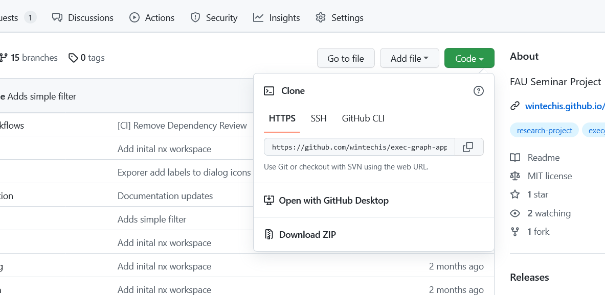

The ExecGraph Web application consists of a frontend (this project) and the data provied by a SPARQL Endpoint. This page explains the deployment process of the frontend and contains references to GraphDB as a potential SPARQL endpoint. However, the SPARQL endpoint may be provided differently e.g. through a SaaS provider or by reusing an existing instance and is therefore not the focus of this documentation.
To use the frontend it has to be made available through a webserver. This encompasses two steps, build and deployment. If you have obtained a pre-build version you may skip the first two steps.
To deploy the application a local environment to build the application and a server to deploy the applications to are required.
Build Environment:
Server:
* GraphDB can also be installed on a separate server. Also it is possible to use othr providers of SPARQL endpoints, however the application has only been tested against GraphDB.
The application requires a public facing SPARQL endpoint. This can be realised through installing GraphDB on the same server as the application or on a separate service. For more information on installing and configuring GraphDB correctly check GraphDB[this page].
After installing GraphDB a new repository should be created and the ExecGraph data imported. The repository must be publicly accessible in read-only mode. The data is available in a separate (private) repository.
Furthermore, the server needs to deliver static files. For this a webserver is required, most commonly NGINX or Apache are used. Please check the linked pages for the respective installation instructions.
The application needs to be build specifically for a deployment as aspects like the path to the SPARQL endpoint may vary. Therefore, there is no packaged version of the application.

To build your own you must download the source code to your local computer or another suitable environment. There are two options to do so:
To use this path, open a command shell pointing to the folder you want to clone the project into. Then run git clone https://github.com/wintechis/exec-graph-apps.git. Other options including the use of GitHub Desktop or SSH, see the GitHub Dialog on the screenshot for the respective information.
On the project GitHub homepage, go to the green Code button and than Download ZIP as shown on above screenshot. Unzip the file in a suitable folder on your device.
Please enter the project folder. All following commands expect to be executed in the root directoy of the project files.
Next, configure the app for your deployment. At a minimum you must set the URL of the remote SPAQL endpoint. To do so modify the ./src/environments/environment.prod.ts.
It may look like this:
export const environment = {
production: true,
basepath: '/', // The path from the webserver root to the index.html used for the router, only modify on subfolder deployments
sparqlEndpoint: 'https://your-webserver/path/to/endpoint' // SPARQL Endpoint used for all data displayed in the app
};
Other configuration changes are optional:
If the app is deployed to a subfolder the basepath in the environment.prod.ts of the application has to be set and the --deployUrl parameter has to be passed at step 3 of the build instructions.
Example: nx build --deployUrl '/<path-to-exec-graph-web>/' (same path must be configured in the environment.prod.ts
Please follow these steps to build the configured application.
npm installnpm run build<project_root>/dist/apps/exec-graph-webFinally, the application must be transfered to the server.
Please follow these steps:
index.html.Please request the required credentials from your hosting provider or system administrator.
Using FTP Please use the Web FTP utility of your servers hosting software or alternatively a FTP Client software like FileZilla. The Windows file explorer also supports FTP Network Drives.
Using SCP (Secure Copy) command line utility SCP is available for Linux systems or as part of the Putty package for Windows users.
To copy the files, run the following command. You need to add your credentials, the servers domain or IP address and eventually adjust the target folder path.
scp -rp ./dist/apps/exec-graph-web <user>@<server>:~/public_html/
You will be prompted for the password.
Please find here sample configuration snippets for common webservers:
Apache
For Apache you may want to add rewrite rules to redirect all requests to non-existent files to the index.html.
To do so, copy the following code to a .htaccess file in the webservers project directory. Don't forget to adjust the rewrite base to the subfolder you have deployed or / for root deployments.
<IfModule mod_rewrite.c>
RewriteEngine On
RewriteBase <PathToSubfolder>
RewriteRule ^index\.html$ - [L]
RewriteCond %{REQUEST_FILENAME} !-f
RewriteCond %{REQUEST_FILENAME} !-d
RewriteCond %{REQUEST_FILENAME} !-l
RewriteRule . index.html [L]
</IfModule>
Generated using TypeDoc, the 9/21/2022